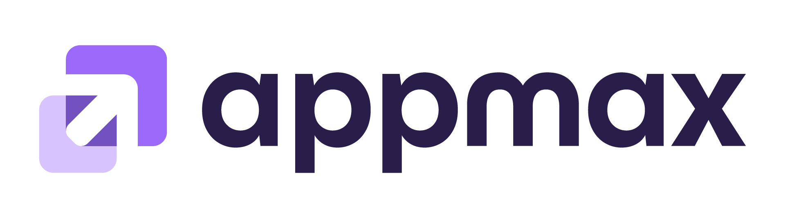

DEVFEST POA 2026
O Laboratório da IA
Quatro práticas para fazer no celular. Abra a que o slide estiver mostrando.
1
Monte seu antifraude
Como ela aprende · 7 min
→
2
Monte os olhos da sua rede
Como ela enxerga · 7 min
→
3
Monte seu modelo de linguagem
Como ela fala · 5 min
→
4
Converse com uma IA que vê
Como ela pensa · 8 min
→
Vittor Britis